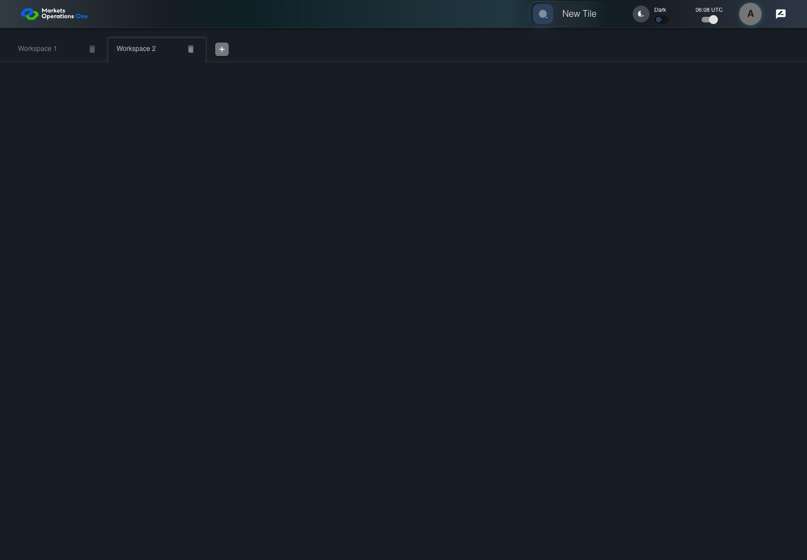

UI-MFE-007 another tile remains usable after a module failure
PASS · application/run-050/ui-mfe-007-another-tile-remains-usable-after-a-module-failure-a9eb1652dfda-attempt-1 · ACTUAL_APPLICATION_LOCAL_SERVICES
Actual React shell/provider/dispatcher, error boundary, and Home FDC3 hook. Controlled login, catalog, container and intent delivery. URL cases explicitly mount inspected useParameters source through declared base import adapters. No real OpenFin desktop or protected business tenant acceptance.
2026-10-22T06:08:27.673Z to 2026-10-22T06:08:32.630Z
Assertions and result · Artifact manifest · Exact run inputs and source hashes
Result SHA-256:2fb36df900e7b9004609bfadf6fb3b45b461fd192b4834ffe8a5421f120e372eMachine observations
- module-isolation-fixture.json
759961b19121b16d5a522aba438b63272599f7c53ae7c6c462395468f4e85758
Screenshot capture: CAPTURED. Named frames: 5.
Step screenshot bindings: COMPLETE. 4/4 canonical steps have execution screenshots.
Bindings measure structural coverage only. They do not establish screenshot content quality or relevance.
Screenshot content review: NOT_REVIEWED. Recorded context: 0/5 frames. Identical image bytes: 1 repeated frames. Recorded context does not establish human visual review.
Canonical step timeline
Given User A is authenticated as fixture UI-USER-01 with the case-specific permissions
Execution: PASSED.1. step-01 Visible state after step 1: Given User A is authenticated as fixture UI-USER-01 with the case-specific permissions
2026-10-22T06:08:29.107Z · 1440×1000
Step: /Users/lushevol/code/github/ratan-release-impact/workbench/tasks/ui-test-coverage-20261022/test-cases.md:7090
SHA-256:7eb295e5252fa5f8f9e7b0fcbd7a72300f7f7d64e7c980d8d1f3cf2e605403c8And W1 shows tile fallback and W2 contains Panel Two
Execution: PASSED.2. step-02 Visible state after step 2: And W1 shows tile fallback and W2 contains Panel Two
2026-10-22T06:08:30.704Z · 1440×1000
Step: /Users/lushevol/code/github/ratan-release-impact/workbench/tasks/ui-test-coverage-20261022/test-cases.md:7091
SHA-256:3915c71171ee17d66f00b7af5cea58dee95637597ae92b9e3bb74406969f6e66When User A clicks tab with source identity "Workspace Name textbox value Workspace 2" inside the shell tablist named "workspaces"
Execution: PASSED.
3. step-03 Visible state after step 3: When User A clicks tab with source identity "Workspace Name textbox value Workspace 2" inside the shell tablist named "workspaces"
2026-10-22T06:08:30.897Z · 1440×1000
Step: /Users/lushevol/code/github/ratan-release-impact/workbench/tasks/ui-test-coverage-20261022/test-cases.md:7092
SHA-256:14b77a8699e9df64ddf6c76f8cca83e47cc0bf5b31d6ce9b4072e8f762515622Then text with text "Panel Two" inside the selected W2 tabpanel is visible
Execution: PASSED.4. step-04 Visible state after step 4: Then text with text "Panel Two" inside the selected W2 tabpanel is visible
2026-10-22T06:08:31.768Z · 1440×1000
Step: /Users/lushevol/code/github/ratan-release-impact/workbench/tasks/ui-test-coverage-20261022/test-cases.md:7093
SHA-256:95f0283d71713f790f442cd198608fa9e21311d3b9bda8a2ef70feb09ad80dbf
Additional named frames

The final visible state after the named test assertions.
2026-10-22T06:08:31.882Z · 1440×1000Step: Test source: /Users/lushevol/code/github/ratan-release-impact/workbench/e2e/audit-specs/conditional-module-launch.spec.ts:9
SHA-256:
95f0283d71713f790f442cd198608fa9e21311d3b9bda8a2ef70feb09ad80dbfImage bytes match frame 4. An unchanged image can be valid for consecutive assertions. This match does not establish correct step content.
Screenshots establish visible state only. Assertions and traces support functional claims.